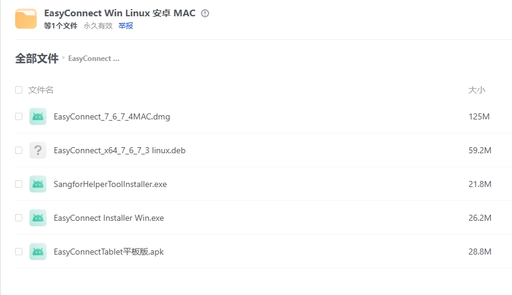
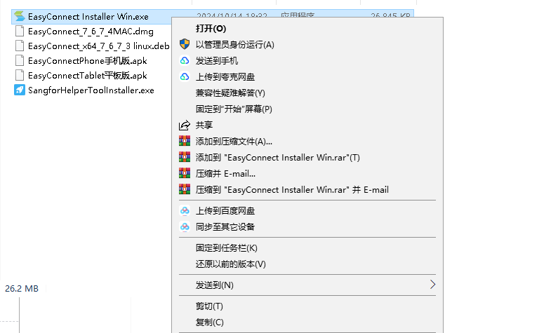
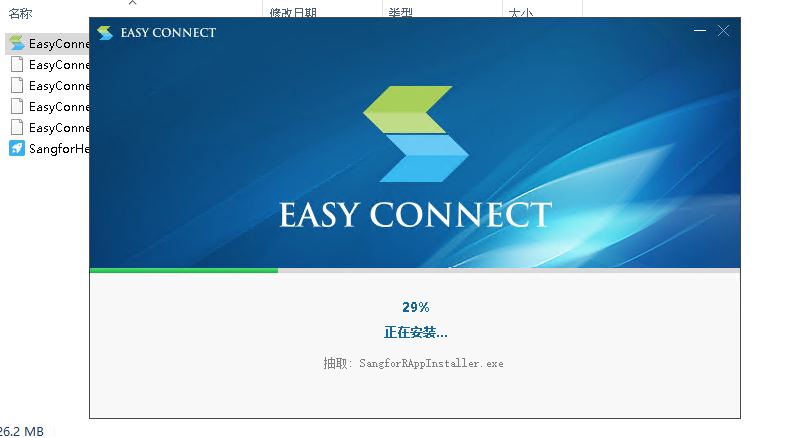
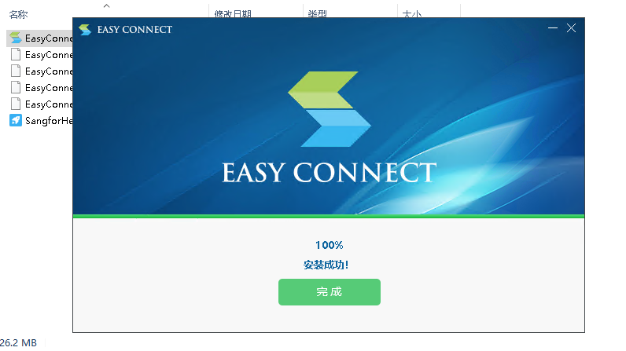
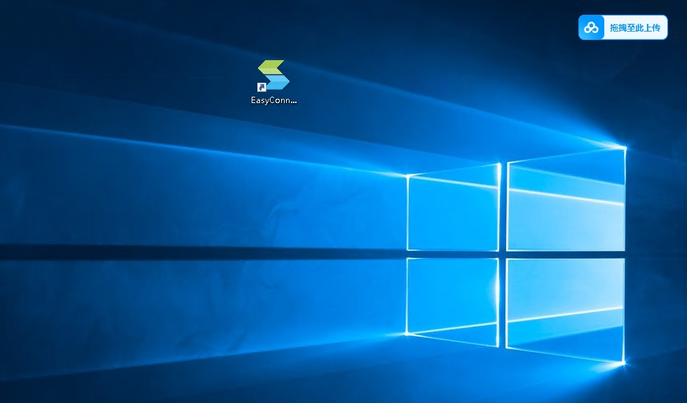
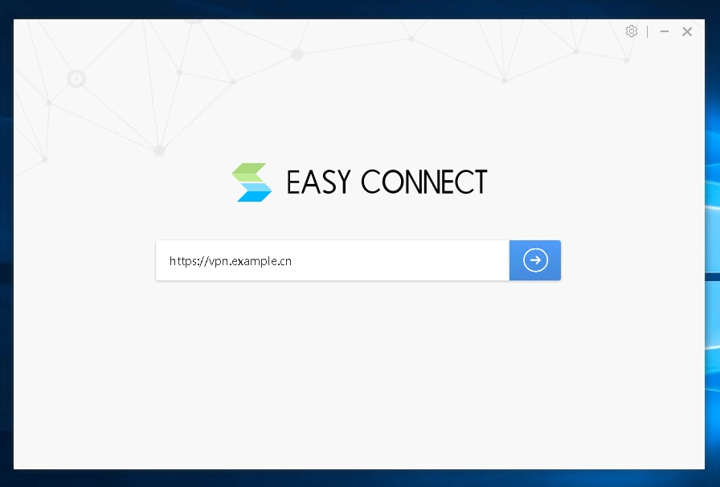

1. 选中下载的安装包，鼠标右键解压到"EasyConnect Win Linux安卓MAC"文件夹（我这里以Win版为例，其他设备自行下载来安装即可）

2. 选中"EasyConnect InstallerWin.exe"右键以管理员身份运行

3. 点击"同意"

4. 软件安装中，请耐心等待安装完成
5.点击"完成"

6. 双击打开软件

7. 输入自己的代理服务器地址，点击"连接"(我这里以：https://vpn.example.cn为例)

8. 登录自己的账号即可